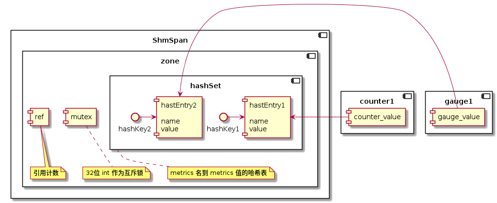

本文记录了对 MOSN 的源码研究 - MOSN 的共享内存模型。
本文的内容基于 MOSN v0.9.0，commit id b2a239f5。
机制
MOSN 用共享内存来存储 metrics 信息。MOSN 用 mmap 将文件映射到内存，在内存数组之上封装了一层关于 metrics 的存取逻辑，实现了 go-metrics 包的关于 metrics 的接口，通过这种方式组装出了一种基于共享内存的 metrics 实现供 MOSN 使用。
创建共享内存：Mmap
操作共享内存的方法主要在 pkg/shm/shm.go 文件下：
func Alloc(name string, size int) (*ShmSpan, error) {
...
return NewShmSpan(name, data), nil
}
func Free(span *ShmSpan) error {
Clear(span.name)
return syscall.Munmap(span.origin)
}
func Clear(name string) error {
return os.Remove(path(name))
}
都是围绕着 ShmSpan 结构体的几个操作方法。再来看 ShmSpan 结构体：
type ShmSpan struct {
origin []byte // mmap 返回的数组
name string // span 名, 创建时指定
data uintptr // 保存 mmap 内存段的首指针
offset int // span 已经使用的字节长度
size int // span 大小
}
Alloc 方法按照给定的 name 参数，在配置文件的目录下创建文件，并执行 sync.Mmap，其文件尺寸即 size 参数大小。Mmap 过后，将信息保存在 ShmSpan结构内返回。
代码逻辑比较简单，大家可以自行阅读：https://github.com/mosn/mosn/blob/b2a239f5/pkg/shm/shm.go#L28
由此看出，一个 ShmSpan 可以看做是一个共享内存块。
下面我们将会分析共享内存块在 MOSN 里的使用场景：metrics。
操作共享内存：配置
在分析如何通过共享内存存取 metrics 之前，首先看这相关的功能是如何配置的。
https://github.com/mosn/mosn/blob/b2a239f5/pkg/mosn/starter.go#L318
func initializeMetrics(config v2.MetricsConfig) {
// init shm zone
if config.ShmZone != "" && config.ShmSize > 0 {
shm.InitDefaultMetricsZone(config.ShmZone, int(config.ShmSize), store.GetMosnState() != store.Active_Reconfiguring)
...
从这里看出，通过读取配置文件的 ShmZone 和 ShmSize 来初始化共享内存，即配置文件的以下两个字段是控制着共享内存的文件名和大小的：
{
...
"metrics": {
...
"shm_zone": "文件名",
"shm_size": "共享内存文件大小"
},
...
}
操作共享内存：metrics
metrics 相关的逻辑在 pkg/metrics 包下。
上文说的 ShmSpan 是保存共享内存信息的结构体，而要理解 MOSN metrics 对共享内存的使用，还要先理解 MOSN 封装的几个结构体：zone、hashSet 和 hashEntry。
这几个结构体与 ShmSpan 的关系大致是这样的：

ShmSpan 是共享内存块，而 zone、hashSet 和 hashEntry 对 ShmSpan 进行了划分：
hashSet封装出了 metrics name 映射到 metrics value 的哈希表hashEntry是哈希表的值，也是 metrics 值的保存的共享内存空间zone对ShmSpan进行了划分，划分出了一个int32值作为互斥锁；一个int32值作为zone的引用计数；也划分出了一片空间保存hashSet
以上步骤做好后，创建一个 metrics 就可以通过创建对应的哈希 key value，拿到对应的共享内存地址，存取 metrics 信息。
下面是源码步骤，大家可以自行跟踪调试：
1) 创建 zone：
https://github.com/mosn/mosn/blob/b2a239f5/pkg/metrics/shm/zone.go#L81
func newSharedMetrics(name string, size int) (*zone, error) {
alignedSize := align(size, pageSize)
// 申请 ShmSpan
span, err := shm.Alloc(name, alignedSize)
if err != nil {
return nil, err
}
// 1. mutex and ref
// 从 span 里取 4 个字节做互斥锁
mutex, err := span.Alloc(4)
if err != nil {
return nil, err
}
// 从 span 里取 4 个字节做引用计数
ref, err := span.Alloc(4)
if err != nil {
return nil, err
}
zone := &zone{
span: span,
mutex: (*uint32)(unsafe.Pointer(mutex)),
ref: (*uint32)(unsafe.Pointer(ref)),
}
// 2. hashSet
// 划分哈希表过程
// assuming that 100 entries with 50 slots, so the ratio of occupied memory is
// entries:slots = 100 x 128 : 50 x 4 = 64 : 1
// so assuming slots memory size is N, total allocated memory size is M, then we have:
// M - 1024 < 65N + 28 <= M
// 计算 slot 的数量和内存占用大小
slotsNum := (alignedSize - 28) / (65 * 4)
slotsSize := slotsNum * 4
// 计算 entry 数量和内存占用大小
entryNum := slotsNum * 2
entrySize := slotsSize * 64
// 哈希表内存大小 = entry 内存占用 + 20 字节 + slot 内存占用大小
hashSegSize := entrySize + 20 + slotsSize
hashSegment, err := span.Alloc(hashSegSize)
if err != nil {
return nil, err
}
// if zones's ref > 0, no need to initialize hashset's value
// 初始化哈希表结构
set, err := newHashSet(hashSegment, hashSegSize, entryNum, slotsNum, atomic.LoadUint32(zone.ref) == 0)
if err != nil {
return nil, err
}
zone.set = set
// add ref
atomic.AddUint32(zone.ref, 1)
return zone, nil
}
这里可以大致说一下哈希表初始化的算法：首先 alignedSize 表示 4k 对齐后的 ShmSpan 大小，前 8 个字节被分配为互斥锁和引用计数，
另外 20 个字节被分配为哈希表的 meta 结构体，
https://github.com/mosn/mosn/blob/b2a239f5/pkg/metrics/shm/hashset.go#L54
type hashSet struct {
entry []hashEntry
meta *meta
slots []uint32
}
...
type meta struct {
cap uint32
size uint32
freeIndex uint32
slotsNum uint32
bytesNum uint32
}
所以真正能被分配为哈希表信息储存的空间 = 总空间 - 8 字节 - 20 字节。那能分配多少个哈希表信息呢？要看看 MOSN 的哈希表组织形式：entry 最开始首尾相连，后面会被组织成一个一个的 slot 链表供哈希碰撞时遍历查询。
所以 slot 和 entry 的比例控制着哈希表查找的性能：entry 比 slot 作为比例的话，比例越高意味着更容易碰撞，链表越长，查找性能下降；相反比例越低链表越短，查找性能越高，但是有越多 slot 闲置，空间会浪费。
从注释看，MOSN 将比例写死为 2：1。假设 100 个 entry + 50 个 slot，其内存比等于 100 * 128（entry 内存占用）：50 * 4 = 64：1，即一份 2：1 的 entry+slot 需要用到（64 + 1）* 4 个字节。
所以，如果按照 2：1 来分配的话，一共可以分配的份数 = 哈希表信息储存空间 / 每一份空间占用 = (总空间 - 8 - 20) / (64 + 1) * 4 份。由此就可以算出 entry 和 slot 可以分配多少份了。
2) 创建指标：
https://github.com/mosn/mosn/blob/b2a239f5/pkg/metrics/shm/counter.go#L56
func NewShmCounterFunc(name string) func() gometrics.Counter {
return func() gometrics.Counter {
if defaultZone != nil {
if entry, err := defaultZone.alloc(name); err == nil {
...
https://github.com/mosn/mosn/blob/b2a239f5/pkg/metrics/shm/zone.go#L166
func (z *zone) alloc(name string) (*hashEntry, error) {
z.lock()
defer z.unlock()
entry, create := z.set.Alloc(name)
...
https://github.com/mosn/mosn/blob/b2a239f5/pkg/metrics/shm/hashset.go#L135
func (s *hashSet) Alloc(name string) (*hashEntry, bool) {
// 1. search existed slots and entries
// 计算 hash 值作为 slot index
h := hash(name)
slot := h % s.meta.slotsNum
// name convert if length exceeded
if len(name) > maxNameLength {
// if name is longer than max length, use hash_string as leading character
// and the remaining maxNameLength - len(hash_string) bytes follows
hStr := strconv.Itoa(int(h))
name = hStr + name[len(hStr)+len(name)-maxNameLength:]
}
nameBytes := []byte(name)
// 查找链表找到对应的 entry
var entry *hashEntry
for index := s.slots[slot]; index != sentinel; {
entry = &s.entry[index]
if entry.equalName(nameBytes) {
return entry, false
}
index = entry.next
}
// 2. create new entry
// 如果找不到, 创建新的 entry
if s.meta.size >= s.meta.cap {
return nil, false
}
// 创建新的 entry 从 hashset 的 meta 信息里拿 next free index
newIndex := s.meta.freeIndex
newEntry := &s.entry[newIndex]
newEntry.assignName(nameBytes)
newEntry.ref = 1
if entry == nil {
// 所以是链表头,保存 index 到 slot
s.slots[slot] = newIndex
} else {
// 否则保存在上一个 entry 的 next 字段内
entry.next = newIndex
}
s.meta.size++
// 设置 next free index
s.meta.freeIndex = newEntry.next
// 设置队尾
newEntry.next = sentinel
return newEntry, true
}
3) 用 Entry 保存 metrics 值
https://github.com/mosn/mosn/blob/b2a239f5/pkg/metrics/shm/counter.go#L56
func NewShmCounterFunc(name string) func() gometrics.Counter {
return func() gometrics.Counter {
if defaultZone != nil {
if entry, err := defaultZone.alloc(name); err == nil {
return ShmCounter(unsafe.Pointer(&entry.value))
}
...
可以看出，entry 的 value 是真正被用作记录 metrics 值的地方，它是一个 64 位的空间。
为什么使用共享内存保存 metrics
看到这里你可能会问，为什么要这么辛苦封装共享内存来保存 metrics 值？为什么不直接使用堆空间来做呢？
其实在源码里也有答案：
https://github.com/mosn/mosn/blob/b2a239f5/pkg/mosn/starter.go#L318
func initializeMetrics(config v2.MetricsConfig) {
// init shm zone
if config.ShmZone != "" && config.ShmSize > 0 {
shm.InitDefaultMetricsZone(config.ShmZone, int(config.ShmSize), store.GetMosnState() != store.Active_Reconfiguring)
...
https://github.com/mosn/mosn/blob/b2a239f5/pkg/metrics/shm/zone.go#L58
func createMetricsZone(name string, size int, clear bool) *zone {
if clear {
shm.Clear(name)
}
...
如果 clear 为真，共享内存就会被清除，那么什么时候为假呢？当 store.GetMosnState() 方法返回 store.Active_Reconfigureing 的时候。即，当 MOSN reconfig 重启的时候，
已经保存的 metrics 是会被保留的。
而且从这里可以看出：
https://github.com/mosn/mosn/blob/b2a239f5/pkg/metrics/shm/zone.go#L124
func newSharedMetrics(name string, size int) (*zone, error) {
...
set, err := newHashSet(hashSegment, hashSegSize, entryNum, slotsNum, atomic.LoadUint32(zone.ref) == 0)
...
https://github.com/mosn/mosn/blob/b2a239f5/pkg/metrics/shm/hashset.go#L78
func newHashSet(segment uintptr, bytesNum, cap, slotsNum int, init bool) (*hashSet, error) {
set := &hashSet{}
...
当 zone.ref 引用计数不为 0 的时候，哈希表里面的信息也是会被保留的。
再来看 zone.mutex 互斥锁的使用：
https://github.com/mosn/mosn/blob/b2a239f5/pkg/metrics/shm/zone.go#L136
func (z *zone) lock() {
times := 0
// 5ms spin interval, 5 times burst
for {
if atomic.CompareAndSwapUint32(z.mutex, 0, pid) {
return
}
...
是通过设置进程 ID 来获取锁的，由此能看出 MOSN 的用意：这个以文件作为 mmap 的共享内存是可以被多个 MOSN 进程共用的。
例如 MOSN 支持跨容器热重启的场景，基于内存共享的 metrics 可以保证热重启过程中不出现指标抖动而造成监控异常。 而且这个文件可以看作是一种文件格式，在任何时候都可以被持久化保存和提取分析使用的。
总结
本文通过分析 MOSN 源码，简述了 MOSN 的共享内存模型，分析了 MOSN 创建共享内存、配置 metrics 和 metrics 对共享内存块的使用。
最后，不鼓励在 Go 里面使用共享内存，除非你有明确的使用场景，例如 MOSN 热升级场景下的 metrics 共享。
参考资料: